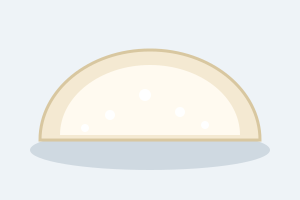

Tapioca

Tapioca is a thin crepe made from hydrated tapioca starch. It is popular
for breakfast in the Northeast of Brazil. It has no flour and no eggs,
and it takes about five minutes to make.
Ingredients
- 1/2 cup hydrated tapioca starch (goma de tapioca)
- A pinch of salt
- Grated coconut
- Condensed milk or grated cheese, for the filling
Steps
- Heat a non-stick frying pan over medium heat. Do not add oil.
- Sift the tapioca starch into the pan to make a thin, even layer, and add the salt.
- Wait about a minute, until the starch sticks together and forms a crepe.
- Add the filling on one half of the crepe.
- Fold the crepe in half and let it cook for another 30 seconds.
- Slide it onto a plate and serve right away.
Sweet version: coconut and condensed milk. Savory version: cheese.
Back to all recipes